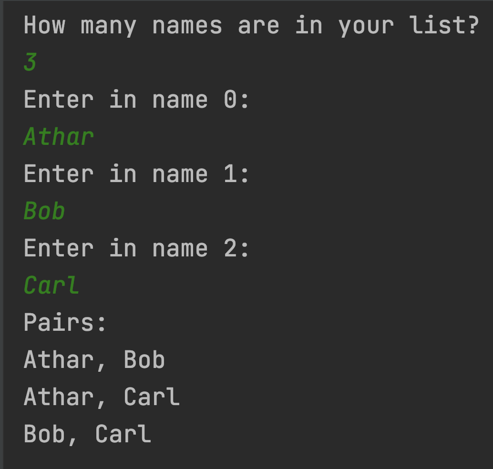

Professor Abdul-Quader
22 February 2021
Write a method that requires an integer as a parameter and returns the factorial of that number. If the parameter is negative, it should return 0. Recall: \(n! = 1 \times 2 \times \ldots \times (n − 1) \times n\), all the numbers from \(1\) to \(n\) multiplied together.
Test out your method with the following main method:
public static void main(String[] args) {
System.out.println("3! = " + factorial(3)); // 3! = 6
System.out.println("5! = " + factorial(5)); // 5! = 120
System.out.println("10! = " + factorial(10)); // 10! = 3628800
}Two key benefits of using methods: code re-use and modular design. You can write a method once to solve a problem, and never have to re-write it or copy/paste it.
Rule of thumb: if you need to do something more than once, you probably should write a method for it.
Design (don’t implement, yet) a program which asks the user to input in a list of names, and outputs all pairs of names from the list.
How do you design this? What smaller components can be tested independently?
Part 1:
public static void changeNumber(int x) {
x++;
}
public static void main(String[] args) {
int x = 0;
changeNumber(x);
System.out.println(x);
}What do you think this outputs? What does this actually output?
public static void changeNumber(int[] x) {
x[0]++;
}
public static void main(String[] args) {
int[] x = new int[1];
x[0] = 0;
changeNumber(x);
System.out.println(x[0]);
}What do you think this outputs? What does this actually output?
public static void changeNumber(int[] x) {
x = new int[1];
x[0] = 1;
}
public static void main(String[] args) {
int[] x = new int[1];
x[0] = 0;
changeNumber(x);
System.out.println(x[0]);
}public static void printLines(int num) {
for (int i = 0; i < num; i++) {
System.out.println(); // blank line
}
}
public static void main(String[] args) {
printLines(20);
System.out.println(num); // compiler error!
}Write a program which asks the user to input in a list of names, and outputs all pairs of names from the list.
This exercise is optional, but extra credit. Due Tuesday (3/2).

Handle the input first!
Use a while loop